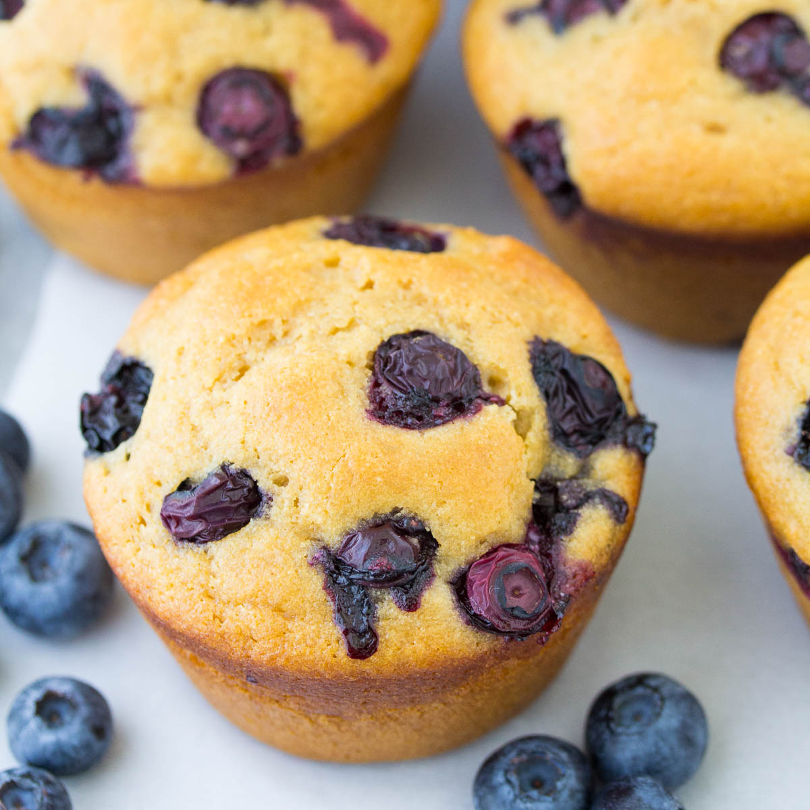

Muffin

Description
An awesome healthy alternative to the usual
blueberry muffin.
Ingredients
- ¾ cup all-purpose flour
- ¾ cup whole wheat flour
- ¾ cup white sugar
- ¼ cup oat bran
- ¼ cup quick cooking oats
- ¼ cup wheat germ
- 1 teaspoon baking powder
- 1 teaspoon baking soda
- ¼ teaspoon salt
- 1 cup blueberries
- ½ cup chopped walnuts
- 1 banana, mashed
- 1 cup buttermilk
- 1 egg
- 1 tablespoon vegetable oil
- 1 teaspoon vanilla extract
Steps
- Preheat the oven to 350 degrees F
(175 degrees C). Grease a 12 cup muffin pan,
or line with paper muffin cups.
- In a large bowl, stir together the all-purpose
flour, whole wheat flour, sugar, oat bran,
quick-cooking oats, wheat germ, baking powder,
baking soda and salt. Gently stir in the
blueberries and walnuts. In a separate bowl, mix
together the mashed banana, buttermilk, egg, oil
and vanilla. Pour the wet ingredients into the
dry, and mix just until blended. Spoon into
muffin cups, filling all the way to the top.
- Bake for 15 to 18 minutes in the preheated oven,
or until the tops of the muffins spring back
when lightly touched.